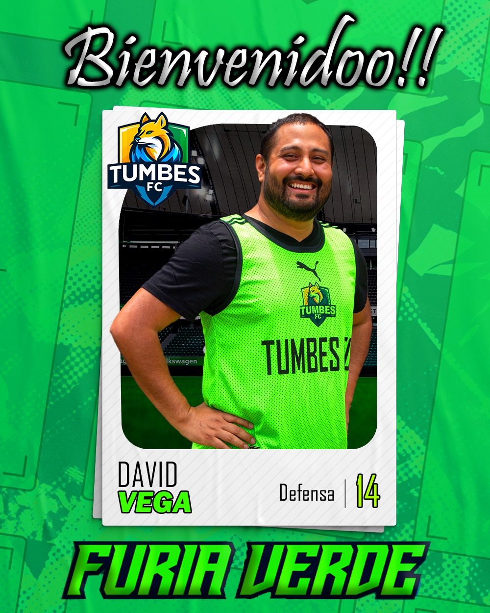
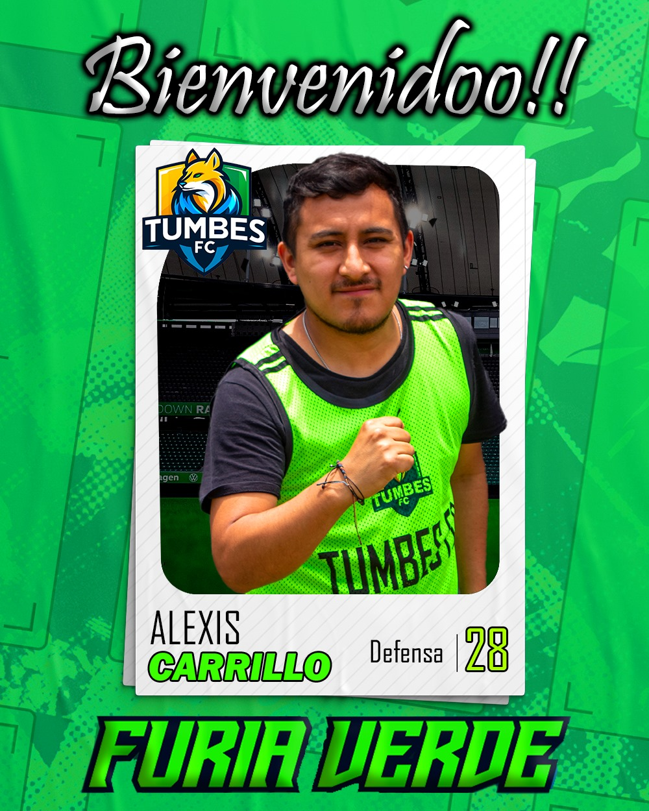
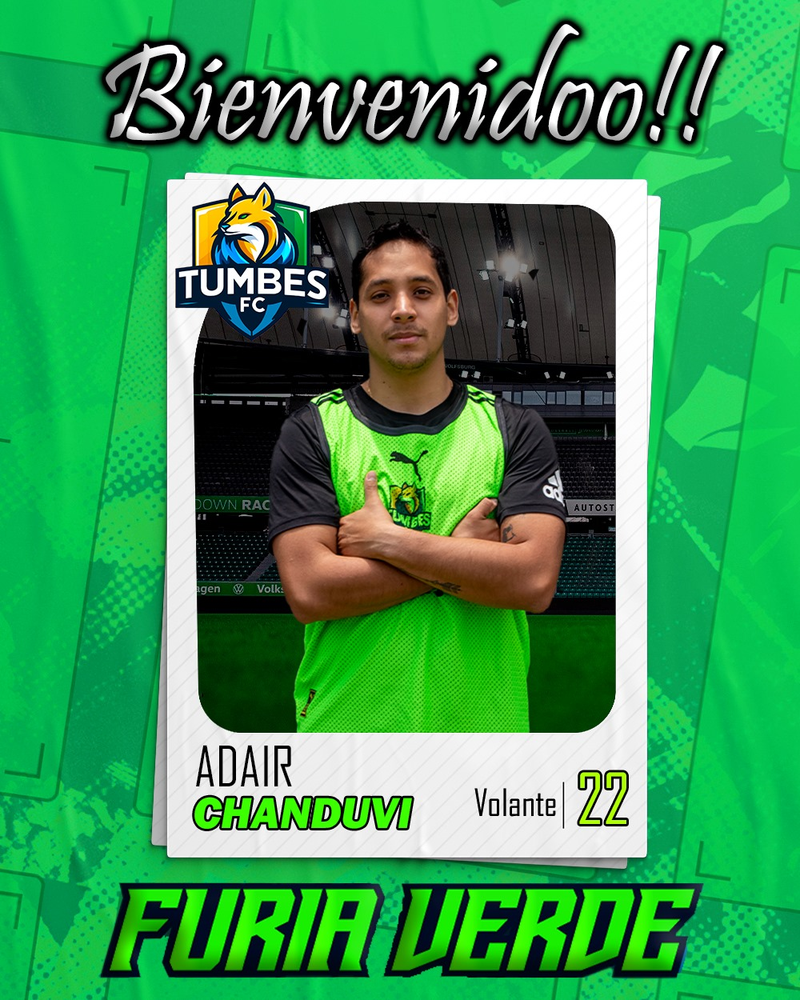
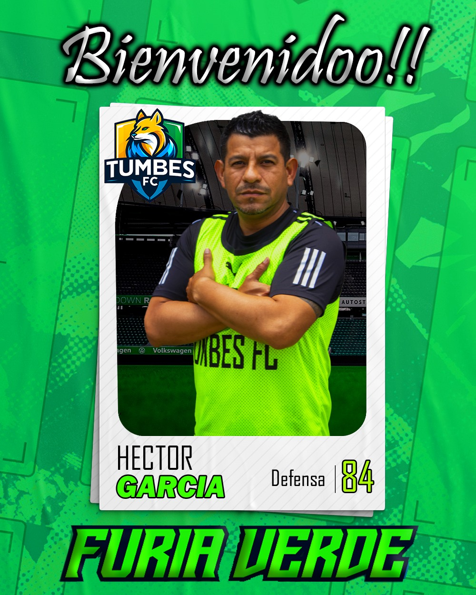

Nuestra Historia
Somos Tumbes FC, un equipo de fútbol amateur nacido de la pasión y la amistad. Fundado en 2024, nuestro objetivo es representar con orgullo a nuestra ciudad en cada cancha que pisamos. Creemos en el juego limpio, el esfuerzo y el trabajo en equipo para alcanzar la victoria.
Nuestro Equipo

David Vega
Defensa

Alexis Carrillo
Defensa

Adair Chanduvi
Mediocampista

Héctor García
Delantero
Próximo Partido
Tumbes FC
VS
Rival FC
Fecha: Sábado, 29 de Junio, 2025
Hora: 15:00
Lugar: Estadio Mariscal Cáceres, Tumbes
Únete o Contáctanos
¿Interesado en unirte al equipo o jugar un partido amistoso? Escríbenos a nuestras redes sociales.